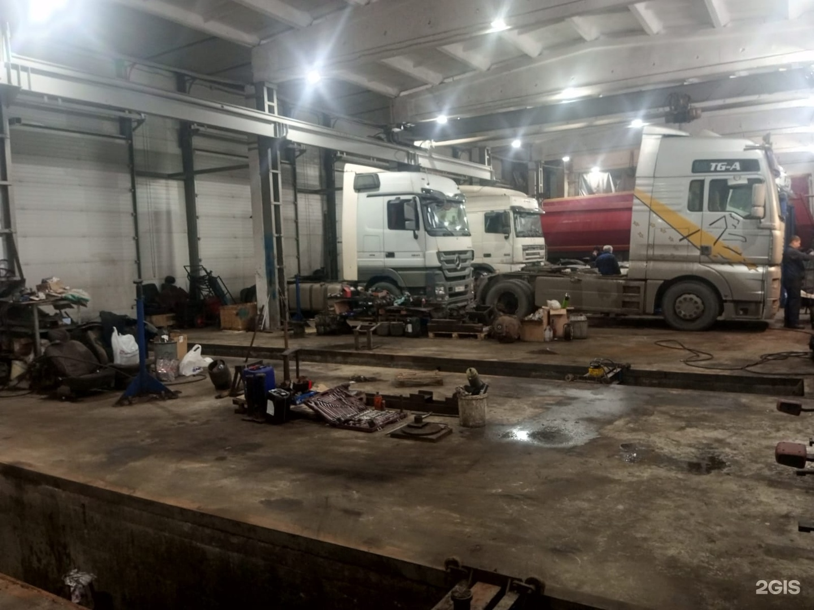
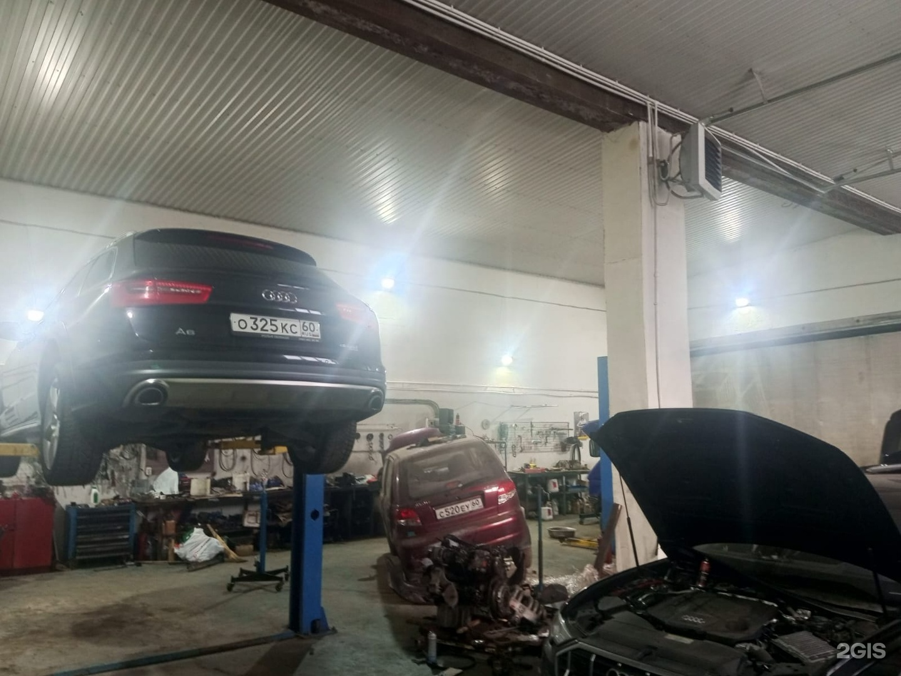
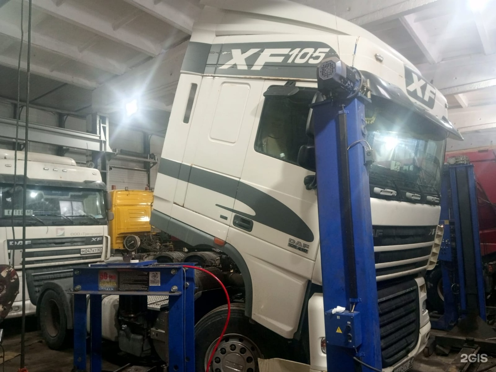
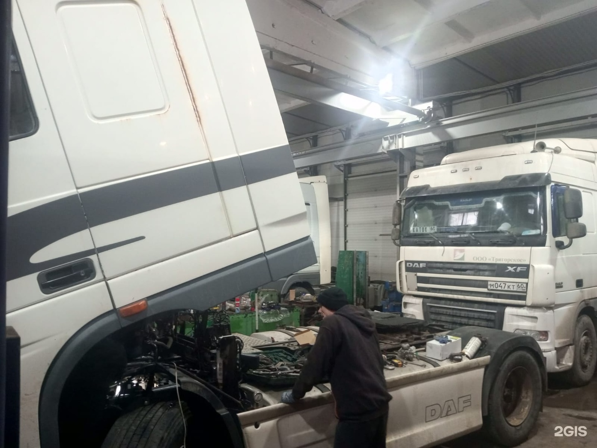

Автосервис для грузовых и легковых автомобилей · Кресты
ТрансСервис
Ремонт грузовиков, прицепов и легковых автомобилей
Диагностика двигателя и ходовой, замена масла и фильтра. Позвоните в сервис, чтобы обсудить нужные работы.

Направления
Грузовики и прицепы
- 01
Ремонт грузовиков
Работы с тормозами, подвеской, КПП и пневмосистемой.
Грузовики: 88 позиций в прайсе ↓ - 02
Ремонт прицепов
Проверка соосности регулируемых осей, работы с тормозами и подвеской.
Прицепы: 12 позиций в прайсе ↓ - 03
Диагностика ходовой части
- 04
Компьютерная диагностика двигателя
- 05
Замена масла ДВС и масляного фильтра
Прайс
Стоимость работ
Прайс проверен 28.10.2026. Актуальную цену уточняйте по телефону сервиса.
Прайс в 2ГИСВсе 100 позиций
Энергоаккумулятор - диафрагма, демонтаж и замена
от 750 руб
Шкворневое соединение - Установка рем. комплекта
от 7500 руб
Фильтр осушителя, демонтаж и замена
от 350 руб
Турбокомпрессор, демонтаж и замена
от 4200 руб
Тормозной диск (пер), демонтаж и замена
от 4500 руб
Тормозной диск (зад), демонтаж и замена
от 4500 руб
Тормозной вал - Установка рем. комплекта
от 750 руб
Тормозная трещетка, демонтаж и замена
от 525 руб
Тормозная система (перед. ось) - тормозные колодки, демонтаж и замена
от 900 руб
Тормозная система (вед. ось) - тормозные накладки, демонтаж и замена
от 1875 руб
Тормозная система (вед. ось) - тормозные колодки, демонтаж и замена
от 900 руб
Тормозная система - барабан, демонтаж и замена
от 675 руб
Тормозная камера, демонтаж и замена
от 400 руб
Топливная система - фильтр сепаратора, демонтаж и замена
от 350 руб
Топливная система - основной топливный фильтр, демонтаж и замена
от 350 руб
Сцепление - корзина, демонтаж и замена (при снятой КПП)
от 1 680 руб
Сцепление – калибровка
от 1 400 руб
Схождение – регулировка
от 3000 руб
Суппорт дискового тормоза - установка рем. комплекта направляющих
от 1 500 руб
Суппорт дискового тормоза - Ремонт (полный)
от 2 800 руб
Суппорт дискового тормоза - демонтаж и монтаж
от 975 руб
Ступица, демонтаж и замена
от 1200 руб
Ступица - кольцо ABS, демонтаж и замена
от 640 руб
Ступица - блокподшипников, демонтаж и замена
от 1125 руб
Стартер, демонтаж и замена
от 1280 руб
Стартер – Ремонт
от 1840 руб
Согласование тормозных систем прицепа и тягача
от 2 000 руб
Система охлаждения - термостат, демонтаж и замена
от 2 250 руб
Седельно-сцепное устройство, демонтаж и монтаж
от 2 800 руб
Седельно-сцепное устройство - установка рем. комплекта опоры
от 2 800 руб
Седельно-сцепное устройство – Регулировка
от 700 руб
Рулевая тяга - продольная, наконечник, демонтаж и замена
от 750 руб
Рулевая тяга - продольная, демонтаж и замена
от 1 120 руб
Рулевая тяга - поперечная, наконечник, демонтаж и замена
от 350 руб
Рулевая тяга - поперечная, демонтаж и замена
от 1 125 руб
Рессора передняя, демонтаж и замена
от 4 200 руб
Ресивер, демонтаж и монтаж
от 1 500 руб
Редуктор, демонтаж и монтаж
от 5 600 руб
Редуктор - сальник хвостовика, демонтаж и замена
от 1500 руб
Редуктор – ремонт
от 15000 руб
Редуктор - замена масла
от 750 руб
Радиатор, интеркуллер - демонтаж и монтаж
от 7 000 руб
Полурессора зад. подвески, демонтаж и замена
от 3 525 руб
Подвесной подшипник, демонтаж и замена
от 2 800 руб
Пневморессора, демонтаж и замена
от 1000 руб
ПГУ, демонтаж и замена с прокачкой
от 2175 руб
ПГУ - установка рем комплект
от 2 100 руб
Осушитель воздуха, демонтаж и замена
от 2 800 руб
Осушитель воздуха - установка рем. Комплекта
от 3000 руб
Натяжитель ремня, демонтаж и замена
от 2 100 руб
КПП (с ретардой) - демонтаж и монтаж
от 12 600 руб
КПП (без ретарды) - демонтаж и монтаж
от 10 500 руб
КПП – ремонт
от 21 000 руб
КПП - замена масла
от 750 руб
Компрессор, демонтаж и монтаж
от 4 200 руб
Компрессор – ремонт
от 4 200 руб
Карданный вал - крестовина, демонтаж и замена
от 2 800 руб
Замена масла ДВС и масляного фильтра
от 1275 руб
Двигатель - регулировка клапанов
от 3 500 руб
Двигатель - прокладка поддона картера, демонтаж и замена
от 3000 руб
Двигатель - прокладка коллектора (выпуск), демонтаж и замена
от 3 500 руб
Двигатель - прокладка коллектора (впуск), демонтаж и замена
от 2 800 руб
Двигатель - прокладка клапаной крышки, демонтаж и замена
от 1 400 руб
Двигатель - ГБЦ, демонтаж и монтаж (с заменой прокладки)
от 12500 руб
Датчик ABS - демонтаж и замена
от 800 руб
Генератор, демонтаж и замена
от 1 400 руб
Генератор – Ремонт
от 2 100 руб
Воздушный фильтр, демонтаж и замена
от 350 руб
Ведущая ось, демонтаж и монтаж
от 13 300 руб
Блок подготовки воздуха, демонтаж и замена
от 2 800 руб
Автономный отопитель, демонтаж и монтаж
от 1200 руб
Автономный отопитель – ремонт
от 2675 руб
V-образ. тяга - сайлентблок (центр), демонтаж и замена
от 1050 руб
V-образ. тяга - сайлентблок (конец), демонтаж и замена
от 1050 руб
V-образ. тяга - демонтаж и замена
от 2 800 руб
4-х контурный кран, демонтаж и замена
от 2 800 руб
4-х контурный кран - установка рем. Комплекта
от 2 100 руб
Энергоаккумулятор, демонтаж и замена
от 400 руб
Пневмосистема – диагностика
от 800 руб
Ось п/прицепа - проверка соосносности 3-и оси
от 7200 руб
Ось п/прицепа - проверка соосносности
от 2 400 руб
Компьютерная диагностика двигателя
от 1 400 руб
Компьютерная диагностика EBS
от 1 400 руб
Компьютерная диагностика
от 2000 руб
Диагностика ходовой части
от 800 руб
Ведущая ось - проверка соосности
от 2400 руб
Блок подготовки воздуха – Сервис
от 1 120 руб
Блок подготовки воздуха – Конфигурация
от 2 800 руб
Соосность 3-осей п/прицепа (при условии регулируемости осей)
от 7200 руб
Согласование тормозных усилий п/прицепа и тягача
от 2 000 руб
Подготовка к регулировке 1-го колеса (актуально для не регулируемых осей)
от 2 400 руб
Замена тормозных колодок (для п/прицепов с дисковыми тормозами) - 1 колесо
от 900 руб
Замена сайлентблоков рычагов подвески (интеграл) – 1 сайлентблок
от 3000 руб
Замена сайлентблоков полурессор - 1 сайлентблок
от 1 200 руб
Замена полурессоры п/прицепа
от 3 000 руб
Замена пневморессоры
от 840 руб
Замена накладок тормозных колодок (для п/прицепов с барабанными тормозами) – 1 колесо
от 1 200 руб
Замена модулятора п/прицепа
от 4500 руб
Ввод в эксплуатацию модулятора п/прицепа
от 2 400 руб
Компьютерная диагностика системы EBS,ABS п/прицепа
от 2000 руб
«От» означает начальную стоимость указанной работы. Единица работы указана в названии позиции.
Мастерская
Боксы и работа



Отзывы
Что отмечают клиенты
Один из посетителей положительно оценил результат работ и то, как быстро их выполнили.
В другом отзыве посетитель рекомендует автосервис.
Пересказ мнений посетителей без имён авторов. Отзывы в 2ГИС
Контакты
Для водителя
Кресты
Часы работыПН–ПТ 8:30–18:00; СБ–ВС — выходной